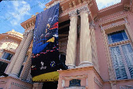

Nacional
Aprieta en un elemento para ver su ficha
Bibliotecas
Biblioteca nacional
Biblioteca nacional
Siendo la primera institucion cultural en establecerse en Chile y su más influyente centro bibliográfico patrimonial, la Biblioteca Nacional se dedica a reunir, conservar y difundir una gran cantidad de impresos, materiales bibliográficos y audiovisuales, partituras, manuscritos, mapas, fotografías, revistas, periódicos y archivos digitales, como parte del material histórico y cultural chileno.
Cada año, esta institucion cuenta con mas de 300 mil visitantes y alrededor de 2 millones de consultas. Entre otras cosas cuenta con un catálogo bibliográfico en línea y material bibliográfico para no videntes. También tiene servicios en línea, tales como Bibliotecario en línea, Memoria Chilena y Chile para niños.
Dirección: Libertador Bernardo O'Higgins 651, Santiago
Horario: Lunes a viernes de 9:00 a 19:00 horas, sábados de 9:10 a 14:00 horas. Domingos y festivos cerrado.
Contacto: Web - +56 2 2360 5400 - Escribir correo
Bibliotecas públicas
Bibliotecas públicas
Siendo un organismo dependiente de la Dirección de Bibliotecas, Archivos y museos, el Sistema Nacional de Bibliotecas Publicas se dedica a regular las políticas locales, regionales y nacionales dirigidas a las bibliotecas públicas.
Más de 450 bibliotecas públicas presentan un convenio con la Dibam, que permite que éstas sean asesoradas, capacitadas, promovidas, desarrolladas, fortalecidas y coordinadas por el SNBP.
Dirección: Puedes encontrar la más cercana aquí
Horario: Consultar
Contacto: Web - +56 2 2796 3400
Bibliometro
Bibliometro
Desde 1996, este servicio brindado en diversas estaciones de la red de Metro de Santiago ofrece a los inscritos una gran variedad de obras para su préstamo. Este servicio se expandió con el tiempo a otras importantes ciudades del mundo.
Dirección: En estaciones San Pablo, Bellavista de la Florida, Baquedano, Los heroes, Macul, Pajaritos, Plaza de armas, Plaza de Puente Alto, Quinta Normal, Tobalaba, Cal y canto, La Cisterna, Los Dominicos, Escuela militar, Franklin, Vespucio norte
Horario: de 9:00 a 21:00 horas
Contacto: Web
Biblioredes
Biblioredes
Programa desarrollado por la DIBAM en el que han colaborado el Estado, distintas municipalidades de Chile y la Fundacion Bill & Melinda Gates.
Estos lugares se conocen por ser un buen punto de encuentro para los lectores y contar con acceso público a internet. En su página oficial se pueden ver los distintos lugares habilitados y su ubicacion.
Computadores con conexión a Internet, capacitación comunitaria en computación enfocadas en alfabetización digital y promoción de creación de contenido digital de forma local forman parte de sus dervicios básicos. Los contenidos creados por los usuarios en estos puntos son publicados en www.contenidoslocales.cl.
Dirección: Puedes encontrar la más cercana aquí
Horario: Consultar
Contacto: Web
Archivo
Archivo nacional
Archivo nacional
Aquí es dónde se reúnen, protegen y preservan los archivos de los Departamentos de Estado y todos los documentos y manuscritos relativos a la historia nacional
Dirección: Miraflores 50, Santiago
Horario: Lunes a viernes de 9:00 a 17:30 horas
Contacto: Web - +56 2 2413 5500 - Escribir correo
Archivo Regional de Tarapacá, Archivo Regional de la Araucanía y el Servicio Nacional de Conservación y Restauración.
Museos
Museo nacional historia natural
Museo nacional historia natural
Inaugurado el 14 de septiembre de 1830 por Claudio Gay, en uno de los museos más antiguos del continente. Está orientado a crear conciencia y valoración del patrimonio nacional y cultural nacional en la sociedad.
Dirección: Parque Quinta Normal, Santiago
Valores: Domingo y festivos gratis, martes a sábado: $600 adultos, $300 de 8 a 18 años y mayores de 60 años.
Horario: Martes a sábado de 10:00 a 17:30 horas, domingo y feriados de 11:00 a 17:30 horas
Contacto: Web - +56 2 2680 4603 - Escribir correo
Museo nacional bellas artes
Museo nacional bellas artes
Fundado el 18 de septiembre de 1880 bajo el nombre de Museo Nacional de Pinturas, se convertiría más adelante en el Museo y la Escuela de Bellas Artes, inaugurados en una gran Exposicion Internacional el 21 de septiembre de 1910 durante las Fiastas del Centenario de la Independencia de Chile.
Aquí se conservan obras nacionales y extranjeras de tiempos coloniales hasta contemporaneos, entre ellos pinturas, esculturas, grabados, dibujos, fotografías y multimedia.
Dirección: Parque Forestal, Santiago
Valores: Domingo gratis, martes a sábado a $600
Horario: Martes a domingo de 10:00 a 18:50 horas
Contacto: Web - +56 2 2499 1600
Museo historico nacional
Museo historico nacional
Fue creado el 2 de mayo de 1911 en el marco de las celebraciones del Centenario de la Independencia de Chile, y desde el año 1982 se ubica en el Palacio de la Real Audiencia de 1808, antigua sede del gobierno colonial y primer Palacio de Gobierno.
Este Museo, busca facilitar a la comunidad el acceso al conocimiento y recreación de la historia del país, para que se reconozca en ella a través del acopio, conservación, investigación y difusión del patrimonio tangible e intangible que constituye la memoria histórica de Chile.
Dirección: Plaza de Armas 951, Santiago
Valores: Domingo y festivos gratis, martes a sábado a $600 adulto y $300 tercera edad y gratis para estudiantes
Horario: Martes a domingo de 10:00 a 18:00 horas
Contacto: Web - +56 2 2411 7010 - Escribir correo
Monumentos nacionales
Puedes consultar una lista completa de monumentos nacionales por ubicación en monumentos.cl, los que se dividen en monumentos históricos, arqueológicos, públicos, zonas típicas y santuarios de la naturaleza.
Zona norte
Museos
Aprieta en un museo para ver su ficha
Museo de Antofagasta
Museo de Antofagasta:
Aquí se expone el legado natural y cultural de Antofagasta, mostrando sus particularidades geológicas, minerales y paleontológicas, así como el poblamiento prehispanico y la historia de las salitreras.
Dirección: José Manuel Balmaceda 2786, Antofagasta
Valores: Domingo y festivos es gratis, martes a sábado: $600 adulto, $300 adulto mayor y estudiante
Horario: Martes a viernes de 09:00 a 17:00 horas, sábado, domingo y festivos 11:00 a 14:00 horas
Contacto: Web - +56 5 5222 7016
Museo Regional de Atacama (Copiapó)
Museo Regional de Atacama (Copiapó):
Esta institucion se ocupa de conservar y difundir el patrimonio cultural de esta región, centrándose en la tradición minera local. Su catálogo incluye la historia natural, local y arqueológica de la zona.
Dirección: Atacama 98, Copiapó
Contacto: Web - +56 5 2221 2313
Museo Arqueológico de La Serena
Museo Arqueológico de La Serena:
Surge de la unión del Museo Arqueológico y el Museo de Historia Regional, alrededor de 12 mil articulos arqueológicos, etnográficos y paleontológicos son conservados aquí.
Dirección: Cordovez esquina Cienfuegos, La Serena
Valores: Domingo y festivos es gratis, martes a sábados son $600. La entrada sirve para visitar el museo Gabriel Gonzáles Videla
ENTRADA
Horario: Martes a viernes de 9:30 a 17:50 horas. Sábado de 10:00 a 13:00 y de 16:00 a 19:00 horas. Domingo y festivos de 10:00 a 13:00 horas.
Contacto: Web - +56 5 1267 2210
Museo Histórico Gabriel González Videla (La Serena)
Museo Histórico Gabriel González Videla (La Serena):
Fue fundado con el fin de rendirle homenaje al ex mandatario de Chile y exhibir temas de su especialidad, Historia y Arte.
Dirección: Matta 495, La Serena
Valores: Lunes es gratis, martes a sábado son $600. La entrada sirve para visitar el museo arqueológico de La Serena
Horario: Lunes a viernes de 10:00 a 18:00 horas. Sábado de 10:00 a 13:00 horas.
Contacto: Web - +56 5 121 7189
Museo Gabriela Mistral (Vicuña)
Museo Gabriela Mistral (Vicuña):
Ubicado en la ciudad de Vicuña, en el Valle de Elqui, este museo está inspirado en la vida y obra de la poetisa chilena, Premio Nobel de Literatura 1945 y Premio Nacional de Literatura 1951.
Dirección: Gabriela Mistral 759, Vicuña
Horario: Marzo a Diciembre: Martes a viernes de 10:00 a 17:45 horas, sábado de 10:30 a 18:00 horas y domingo y festivos de 10:00 a 13:00 horas. Enero y Febrero: Lunes a sábado de 10:00 a 19:00 horas y domingo de 10:00 a 18:00 horas
Contacto: Web - +56 5 1241 1223
Museo del Limarí (Ovalle)
Museo del Limarí (Ovalle):
Este museo fue fundado en la antigua estación ferroviaria de Ovalle, con una colección de gran valor histórico de objetos arqueológicos, principalmente piezas de alfarería de las culturas Molle, ánimas y Diaguitas originarias del Norte chileno.
Dirección: Covarrubias esq. Antofagasta, Ovalle
Valores: $600
Horario: Martes a viernes de 10:00 a 18:00 horas y Sábado, domingo y festivos de 10:00 a 14:00 horas
Contacto: Web - +56 5 3243 3680
Zona centro
Museos
Aprieta en un museo para ver su ficha
Museo Antropológico P. Sebastián Englert (Isla de Pascua)
Museo Antropológico P. Sebastián Englert (Isla de Pascua)
El Museo Antropológico P. Sebastián Englert se encarga de recopilar, conservar e investigar el patrimonio de la Isla de Pascua y el pueblo rapanui y de mostrarla al mundo.
Dirección: En el norte de Hanga Roa
Valores: $1000
Horario: Martes a viernes de 09:30 a 17:30 horas. Sábado, domingo y festivos de 09:30 a 12:30 horas.
Contacto: Web - +56 3 2255 1020
Museo de Historia Natural de Valparaíso
Museo de Historia Natural de Valparaíso
Ubicado en el Palacio Lyon de Valparaíso, en él podremos encontrar material de estudio de las Ciencias Naturales y Antropológicas.
Dirección: Condell 1546, Valparaíso
Valores: Gratis
Horario: Martes a sábado de 10:00 a 18:00 horas, domingo y festivos de 10:00 a 14:00 horas
Contacto: Web - +56 3 2254 4840

Museo de Artes Decorativas (Santiago)
Museo de Artes Decorativas (Santiago):
El Museo de Artes Decorativas es empieza con la donación por parte de Hernán Garcés Silva, con la misión de ofrecer un lugar para el deleite estético y el conocimiento de objetos artísticos, útiles y preciosos.
Dirección: Recoleta 683, Santiago
Valores: Gratis
Horario: Martes a viernes de 10:00 a 17:30 horas, sábado y festivos de 10:30 a 14:00 horas
Contacto: Web - +56 2 2737 5813
Museo Histórico Dominico (Santiago)
Museo Histórico Dominico (Santiago):
En este museo eclesiástico podrás conocer el patrimonio de los Dominicos, una orden religiosa.
Dirección: Recoleta 683, Santiago
Valores: Gratis
Horario: Martes a viernes de 10:00 a 17:30 horas, sábados y festivos de 10:30 a 14:00 horas
Contacto: Web - +56 2 2737 5813
Museo de la Educación Gabriela Mistral (Santiago)
Museo de la Educación Gabriela Mistral (Santiago)
Aquí podrás recorrer la historia de la educación en Chile.
Dirección: Chacabuco 365, Santiago
Horario: Lunes a viernes de 10:00 a 17:00 horas, sábado de 10:00 a 15:30 horas
Contacto: Web - +56 2 2681 8169
Museo Benjamín Vicuña Mackenna (Santiago)
Museo Benjamín Vicuña Mackenna (Santiago):
Si deseas saber más acerca de Benjamín Vicuña Mackenna, este es el lugar indicado. Aquí se expone sobre la vida y obra de este historiador y político que vivió entre los años 1831 y 1886).
Dirección: Vicuña Mackenna 94, Providencia
Valores: $600
Horario: Lunes a viernes de 9:30 a 17:30 horas, sábados de 10:00 a 14:00 horas
Contacto: Web - +56 2 2222 9642

Museo Regional de Rancagua
Museo Regional de Rancagua:
Este es el lugar adecuado para aprender acerca de la historia regional y los oficios relacionados a la minería y metalurgia junto al desarrollo agrícola.
Dirección: Estado 685, Rancagua
Horario: Martes a Viernes de 10:00 a 18:00 horas, sábado, domingo y festivos de 9:00 a 13:00 horas
Contacto: Web - +56 7222 1524
Museo O'Higginiano y de Bellas Artes de Talca
Museo O'Higginiano y de Bellas Artes de Talca:
Con más de dos mil objetos podrás conocer el pasado artístico e histórico tanto de la Región del Maule como del país.
Dirección: 1 Norte 875, Talca
Horario: Cerrado
Contacto: Web - +56 7 1261 5883

Museo de Arte y Artesanía de Linares
Museo de Arte y Artesanía de Linares:
Contando con dos colecciones, podrás apreciar obras de artistas contemporáneos en la sección de Bellas Artes y dentro de la sección de artesanía, encontrar arqueológica e histórico-antropológica.
Dirección: Valentín Letelier Nº 572, Linares
Valores: $600
Horario: Martes a viernes de 10:00 a 17:30 horas, sábado de 10:00 a 17:00 horas, domingo y festivos de 10:00 a 14:00 horas
Contacto: Web - +56 7 3221 0662
Museo Histórico de Yerbas Buenas
Museo Histórico de Yerbas Buenas:
A solo 12km de la ciudad de Linares podrás encontrar una colección donada por la comunidad del sector.
Dirección: Juan de Dios Puga 283, Yerbas Buenas
Valores: $600
Horario: Martes a viernes de 10:00 a 18:00 horas, sábados, domingos y festivos de 14:00 a 18:00 horas
Contacto: Web - +56 7 3239 0098
Zona sur
Museos
Aprieta en un museo para ver su ficha
Museo de Historia Natural de Concepción
Museo de Historia Natural de Concepción:
Aquí podrás encontrar la historia cultural y natural de la región, a través de las diversas colecciones con las que cuneta este museo.
Dirección: Maipú 2359, Concepción
Valores: $600
Horario: Martes a viernes de 10:00 a 13:30 horas y de 14:30 a 17:30 horas, sábado, domingo y festivos de 15:00 a 17:30 horas
Contacto: Web - +56 4 1231 0932
Museo Mapuche de Cañete
Museo Mapuche de Cañete:
Desde 1977 este museo rinde homenaje a la cultura Mapuche preservando su patrimonio material ancestral.
Dirección: Camino Contulmo, Cañete
Horario: Martes a viernes de 09:30 a 17:30 horas, sábados, domingos y festivos de 13:00 a 17:30 horas
Contacto: Web - +56 4 1261 1093

Museo Regional de la Araucanía (Temuco)
Museo Regional de la Araucanía (Temuco):
Contando con alrededor de 3 mil objetos entre arqueológicos, etnográficos, pictóricos, fotográficos e históricos, este museo te invita a recorrer la historia de la región de Arauco.
Dirección: Alemania 084, Temuco
Valores: $600
Horario: Martes a viernes 09:30 a 17:30 horas, sábado 11:00 a 17:00 horas, domingo y festivos 11:00 a 14:00 horas
Contacto: Web - +56 4 5274 7948
Museo de Sitio Castillo de Niebla (Valdivia)
Museo de Sitio Castillo de Niebla (Valdivia):
Ubicado en la costa de Valdivia, podrás visitar los restos del Fuerte de Niebla y demás fortificaciones españolas de la Bahía de Corral conociendo más sobre cómo se protegían las ciudades de piratas hace ya cientos de años.
Dirección: Costa de Niebla, Valdivia
Horario: Martes a domingo de 10:00 a 19:00 hora
Contacto: Web - +56 6 3228 2084
Museo Regional de Ancud
Museo Regional de Ancud:
Este museo de Chiloé cuenta con objetos de carácter arqueológico, religioso, etnográfico e histórico, recogiendo más de seis mil años de historia.
Dirección: Libertad 370, Ancud
Valores: $600
Horario: Martes a viernes de 10:00 a 17:30 horas, sábado, domingo y festivos de 10:00 a 14:00 horas.
Contacto: Web - +56 6562 2413
Museo Regional de Magallanes
Museo Regional de Magallanes:
Este recinto cuenta con mobiliario y objetos de la época de oro de Magallanes, las que se exhiben en sus Salones de Época junto a una exhibición del proceso de poblamiento humano en el territorio austral.
Dirección: Magallanes 949, Punta Arenas
Horario: Miércoles a lunes de 10:30 a 17 horas, domingos y festivos de 10:30 a 17 horas
Contacto: Web - +56 6 1224 2049
Museo Antropológico Martín Gusinde (Puerto Williams)
Museo Antropológico Martín Gusinde (Puerto Williams):
Ubicado en la isla Navarino, el Museo Martín Gusinde busca conservar el patrimonio natural y cultural del archipiélago. Este recinto cuenta con una colección etnográfica.
Dirección: Aragay - Gusinde, Puerto Williams
Horario: Martes a viernes de 09:30 a 13:00 y de 15:00 a 18:00 horas, sábado y domingo de 14:30 a 18:30 horas
Contacto: Web - +56 6 1262 1043
versión 2014 "foxybam r02" por ravmn
Datos e imagenes tomados de dibam.cl, plataformaurbana.cl o la web oficial del recinto - Fono dibam: +56 2 2360 5272
Se espera incluir las bibliotecas públicas al índice junto a la función de mapas más adelante.
Los datos de esta app pueden estar erróneos. Es responsabilidad del usuario verificarlos directamente en una fuente oficial.
La Dirección de Bibliotecas, Archivos y Museos (DIBAM) es un organismo creado en 1929 con el fin de reunir a las instituciones culturales presentes en el país, coordinándolas y controlando su gestión, tareas y desarrollo. Trabaja junto al Consejo de monumentos nacionales (CMN) y al Consejo Nacional de la Cultura y las Artes (CNCA).
Gracias a Carlos Riveros por haber ayudado con las reseñas.